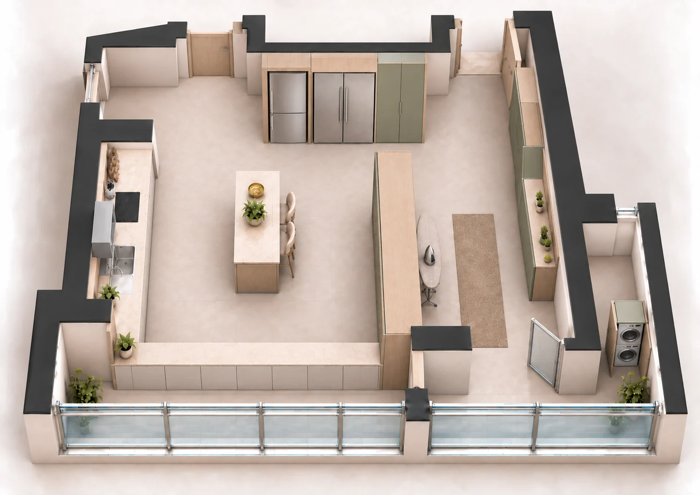
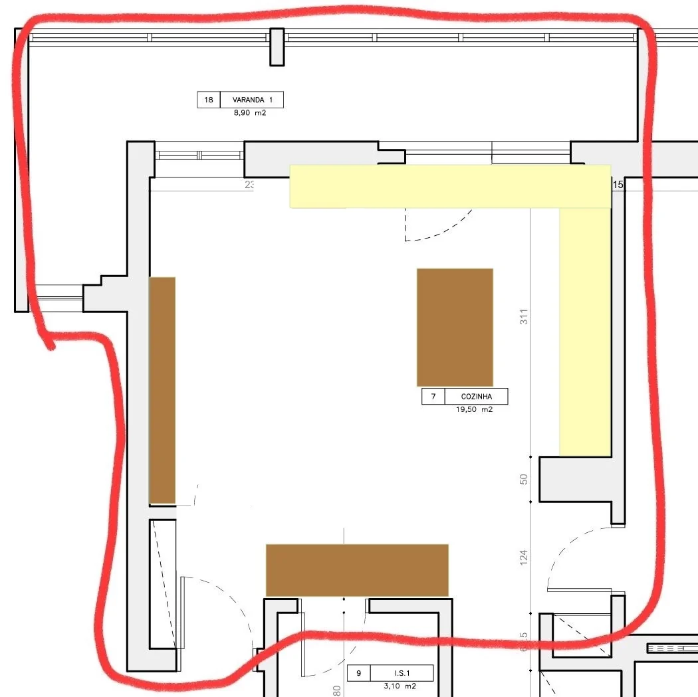
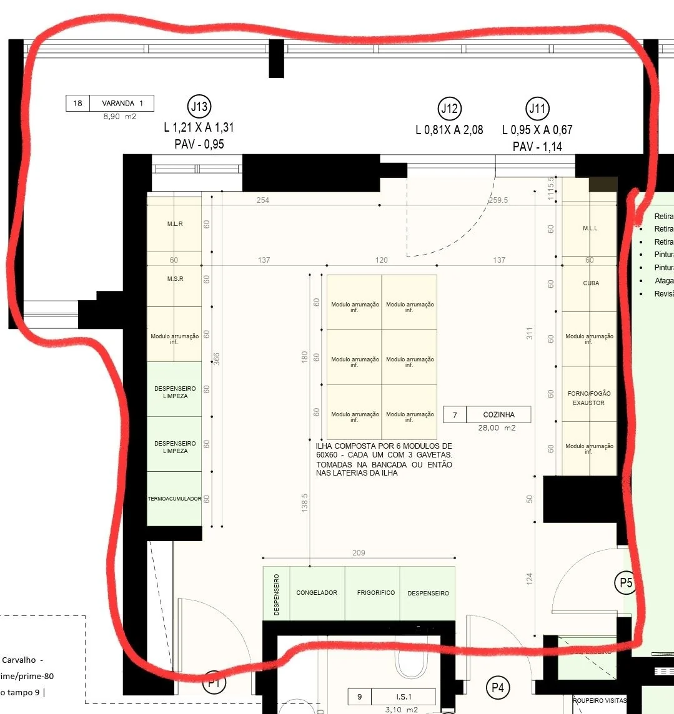

{kind=link}
Cozinhar e estar
Bancada em L, ilha com dois lugares e frigoríficos junto à entrada. As janelas corridas trazem luz da varanda.
Casa nova / Cozinha
Ver projeto da sala ↗Cozinha, lavandaria e engomadoria num conjunto ligado à varanda. Pedra clara, carvalho e verde suave, com arrumação contínua e uma ilha para dois.
A imagem não foi encontrada. Confirma que o HTML continua na mesma pasta que os ficheiros PNG.
Janelas corridas sobre a bancada e face em pedra voltada para a varanda.
Bancada em L, ilha com dois lugares e frigoríficos junto à entrada. As janelas corridas trazem luz da varanda.
Engomadoria com bancada e prateleiras, arrumação alta e tábua junto ao divisor. A passagem para a cozinha fica aberta.
Máquinas em coluna dentro de um móvel alto. Uma separação em pedra e vidro distingue a cozinha da circulação da varanda.
A última alteração
Compara a vista rodada antes e depois da introdução das janelas sobre a bancada e do revestimento em pedra do lado da varanda.

V9 · Com janelas e pedraV8 · AntesHistórico do estudo, incluindo soluções entretanto alteradas. A seleção principal reúne a vista superior V9 e as perspetivas V8.


Estas plantas registam o ponto de partida. As alterações posteriores estão representadas nas imagens e nas notas de cada versão.
A pasta de trabalho atual é:
Casa Santos/cozinha
Esta galeria e os 18 renders estão na subpasta:
output/atelier-varanda-3d/
Abre index.html nessa pasta, ou o index.html na raiz da cozinha. As imagens usam ligações relativas: podes mover a pasta completa da cozinha e continuar a abri-las sem servidor ou ligação à Internet. Os links antigos da conversa apontavam para um caminho sem o nível casa/.